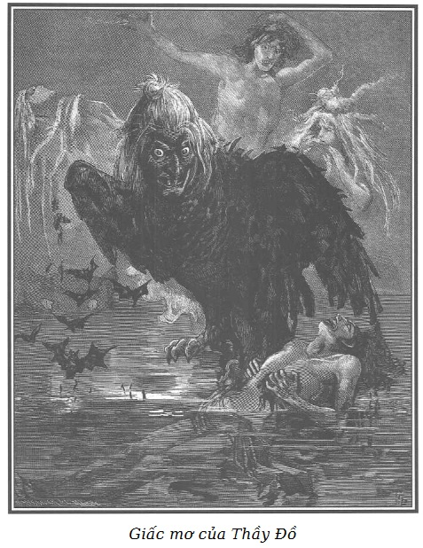

Đây là giấc mơ của lão Thầy Đồ.
Lão gặp lại Rodolphe trong căn nhà phố Gái Góa. Không có gì thay đổi trong gian phòng mà tên cướp đã bị trừng trị khủng khiếp, Rodolphe ngồi sau chiếc bàn có những giấy tờ của lão Thầy Đồ và bức tượng nhỏ bằng đá lam ngọc mà lão tặng mụ Vọ.
Nét mặt Rodolphe buồn và nghiêm nghị.
Đứng bên phải, là ông David da đen thản nhiên, im lặng.
Bên trái ông là Chọc Tiết. Y sợ hãi trước quang cảnh đó.
Lão Thầy Đồ không bị mù nữa, lão nhìn qua làn máu trong suốt chứa đầy trong hốc mắt lão.
Lão thấy mọi đồ vật như nhuốm máu đỏ.
Chẳng khác những con ác điểu là là lượn trên không trung phía trên nạn nhân bị chúng làm cho đờ đẫn trước khi chết, một con diều hâu to tướng với cái đầu là bộ mặt ghê tởm của mụ Vọ đang bay lượn trên đầu lão…
Nó nhìn lão chằm chằm bằng con mắt tròn, xanh nhạt, rực lửa, như đè nặng trên ngực lão với sức nặng ghê gớm. Giống như đã quen trong bóng tối, cuối cùng người ta cũng phân biệt được những đồ vật trước đó chưa nhận ra, lão Thầy Đồ thấy một hồ máu mênh mông ngăn cách lão với chiếc bàn mà Rodolphe ngồi. Ông quan tòa nghiêm khắc ấy cùng với Chọc Tiết và người da đen mỗi lúc một to lớn hơn. Ba bóng ma đó cao đụng trần nhà và trần nhà cũng vươn cao hơn nữa.
Cái hồ máu im ắng, phẳng lặng như chiếc gương đỏ.
Lão Thầy Đồ thấy hiện lên bộ mặt ghê tởm của mình. Nhưng bỗng chốc bộ mặt đó bị xóa đi vì những gợn sóng vỗ tràn trề. Trên mặt hồ bị rung động bốc lên mùi hôi thối của đầm lầy, của màn sương mù tái nhợt như màu tím đặc biệt trên môi người chết.
Màn sương mù càng dâng cao thì bộ mặt của Rodolphe, Chọc Tiết và người da đen càng to lên, đến mức không đo nổi và luôn chế ngự cái màn hơi nước thê thảm đó.
Giữa màn hơi nước ấy, lão Thầy Đồ thấy xuất hiện những bóng ma xanh xao, những cảnh giết người mà chính lão là vai chính…
Trong cái ảo ảnh kỳ quái đó, trước hết lão nhìn thấy một ông già nhỏ bé, hói đầu: ông ta mặc một áo redingote xám và đeo tấm che mắt bằng lụa xanh, ở trong một gian phòng đổ nát, và đếm những đồng tiền vàng dưới ánh đèn.
Qua cửa sổ, ánh trăng nhợt nhạt lọt vào, dưới bóng trắng hắt lên những ngọn cây đung đưa theo gió, lão Thầy Đồ tự thấy chính mình đang đứng bên ngoài, áp bộ mặt gớm ghiếc vào cửa kính.
Lão theo dõi chăm chú từng hành động nhỏ của ông già với đôi mắt nảy lửa… Sau đó lão đập vỡ một ô kính, mở cửa sổ nhảy vọt vào vồ lấy nạn nhân và đâm một nhát dao vào vai ông ta.
Hành động thật mau lẹ, nhát dao chính xác đến nỗi ông già vẫn ngồi nguyên trên ghế…
Tên giết người muốn rút dao khỏi thi thể nạn nhân nhưng không làm nổi…
Lão gắng sức gấp đôi…
Tất cả đều vô ích…
Lúc đó, lão muốn bỏ lại con dao…
Không thể được…
Bàn tay tên giết người gắn vào cán dao giống như lưỡi dao cắm chặt vào người bị hại.
Cùng lúc, tên giết người nghe vang vang tiếng đinh thúc và gươm khua trên lối đi phòng bên cạnh.
Muốn trốn thoát bằng bất cứ giá nào, lão cần phải mang theo thi hài gầy còm của ông già nhưng lão không thể nào rút tay và rút dao ra được.
Lão vẫn không thể làm nổi việc đó.
Cái tử thi mảnh dẻ đó nặng như một khối chì.
Mặc dù có đôi vai lực sĩ, mặc dù cố gắng đến tuyệt vọng, lão vẫn không thể nào nâng nổi cái khối nặng khác thường ấy.
Tiếng chân dồn dập và tiếng gươm lệt sệt mỗi lúc một gần.
Chìa khóa xoay trong ổ. Cửa mở ra…
Ảo ảnh biến mất.
Thế là con cú vọ đập cánh kêu to:
- Đó là ông già đại phú ở phố Roule… án mạng đầu tiên của mày, quân giết người, quân giết người…
Tối sầm một lát, màn hơi bao bọc hồ máu trở lại trong sáng và một cảnh tượng khác hiện ra.
Trời bắt đầu hửng, sương mù dày đặc như bưng lấy mắt. Một người ăn mặc như những người lái buôn súc vật nằm chết trên bờ một con đường lớn. Đất bị giẫm nát, cỏ bật gốc, chứng tỏ nạn nhân đã chống cự một cách tuyệt vọng…
Người đó bị năm vết thương ở ngực… người đó chết rồi nhưng vẫn còn suỵt chó, vẫn còn la lối gọi người đến cứu… “cứu tôi với”, “cứu tôi với”…
Nhưng người đó huýt chó, kêu cứu bằng năm vết thương toang hoác, mấp máy giống như đôi môi đang nói.
Năm tiếng kêu cứu, năm tiếng huýt sáo cùng lúc phát ra từ cái tử thi, qua miệng những vết thương khủng khiếp.
Vào lúc đó, con cú vọ vẫy cánh nhại lại những tiếng rên rỉ thê thảm của nạn nhân và ré lên tiếng cười vang. Nhưng là tiếng cười rú rít, dữ tợn như tiếng cười của những người điên la lớn:
- Người lái bò ở Poissy… quân giết người! Quân giết người! Quân giết người…
Những tiếng vang trong lòng đất, vang vọng lặp lại rất to tiếng cười thê thảm của con cú vọ, rồi sau đó hình như chìm sâu dần vào lòng đất.
Nghe tiếng ồn, hai con chó lớn, đen như gỗ mun, mắt sáng rực như những cục than đỏ nhìn dán vào lão Thầy Đồ, bắt đầu sủa và… quay quay xung quanh lão với tốc độ nhanh đến chóng mặt.
Chúng gần như chạm vào người lão và tiếng sủa của chúng nghe xa như bay theo gió.
Dần dần các bóng ma lu mờ, nhòa đi như những cái bóng rồi mất hút trong đám khói nhợt nhạt mỗi lúc một dâng cao hơn.
Một làn hơi toát ra bao phủ chồng chất trên hồ.
Đó là một thứ sương mù, xanh lục, trong suốt, có thể nói đó là lát cắt dọc một con kênh đầy nước.
Trước tiên người ta thấy dưới lòng kênh là một lớp bùn dày chứa vô số những loại bò sát mà mắt thường không thể nhìn thấy, nhưng lúc này được phóng đại lên như nhìn qua kính hiển vi, với những dáng vẻ quái gở, đầy rẫy và nhung nhúc, nén chặt và khít khao hết mức, đến nỗi một làn sóng ngầm, khó nhận biết, hầu như không dâng lên nổi mặt bùn hay nói đúng hơn là bề mặt của đàn sinh vật uế tạp ấy.
Ở phía trên, một lớp nước đầy bùn lừ đừ chảy chầm chậm, đặc sệt, cuốn theo một khối rác bẩn được tuôn ra từ một cống rãnh của thành phố lớn, đầy cặn bã của đủ các thứ và xác chết súc vật.
Bỗng nhiên lão Thầy Đồ nghe thấy tiếng một vật rơi xuống nước.
Nước rút đột ngột, bắn vào mặt lão.
Qua đám bóng khí sủi lên trên mặt nước, lão Thầy Đồ thấy một người đàn bà đang chìm nhanh xuống nước và đang giãy giụa…
Lão thấy mình và mụ Vọ lủi nhanh lên bờ con kênh Saint-Martin, mang theo một cái hòm bọc lụa đen.
Tất nhiên, lão tham dự vào tất cả các pha hấp hối của nạn nhân mà lão và mụ Vọ đã ném xuống kênh.
Sau lần chìm đầu tiên, lão thấy người đàn bà nửa chìm nửa nổi cố ngoi lên mặt nước, hai tay cuống cuồng đập như người không biết bơi nhưng đang tìm cách tự cứu mình trong tuyệt vọng.
Rồi lão nghe một tiếng kêu lớn.
Tiếng kêu cuối cùng tuyệt vọng đó chấm dứt dần với tiếng nước ùng ục chảy vào họng và người đàn bà lại chìm xuống nước thêm lần nữa.
Con cú vọ vẫn dang cánh đứng im trên trời, nhại lại tiếng khò khè co giật của người đàn bà chết đuối, giống như đã bắt chước những tiếng kêu của ông lái buôn súc vật.
Giữa những tiếng cười ảo não, con cú vọ lặp lại:
- Òng ọc… òng ọc… òng ọc…
Những tiếng kêu đó vọng vào lòng đất.
Chìm thêm một lần nữa, người đàn bà đã tức thở bất giác hít vào thật mạnh, nhưng thay vì hít không khí thì lại uống thêm nước…
Rồi thì đầu người đó ngoẹo ra phía sau, mặt đỏ rồi tái mét, cổ tím tái và phồng to, hai tay co cứng và trong cơn quằn quại cuối cùng, người chết đuối hấp hối với hai bàn chân đã chạm đến lớp bùn.
Người ấy cùng với đám bùn đen bẩn bao bọc nổi lên mặt nước.
Người chết đuối chưa kịp thở hơi cuối cùng đã bị vô số những con bò sát nhỏ li ti phàm ăn và đáng sợ sống trong bùn bám đầy người.
Xác chết nổi lềnh bềnh trên mặt nước, lắc lư một chút rồi chầm chậm chìm theo chiều ngang, chân thấp hơn đầu và lửng lơ trôi theo dòng chảy con kênh.
Đôi lúc nó tự quay đầu hướng về phía lão Thầy Đồ, lúc đó cái xác nhìn lão chằm chằm bằng cặp mắt to xanh lục, đùng đục… môi tím mấp máy.
Lão Thầy Đồ ở xa người chết đuối nhưng tựa như nghe tiếng người đó thầm thì bên tai lão… òng ọc… òng ọc… òng ọc… kèm theo những tiếng động kỳ cục đặc biệt của nước ùa vào một cái lọ không bị nhấn chìm.

.Con cú vọ lặp lại “òng ọc… òng ọc” rồi vừa vỗ cánh vừa kêu:
- Người đàn bà ở kênh Saint-Martin!!! Quân giết người!!! Quân giết người!!!…
Âm thanh trong lòng đất vọng lại… nhưng lẽ ra tắt ngấm trong lòng đất thì những tiếng đó càng vang vọng và nghe như gần lại. Lão Thầy Đồ tưởng như nghe những tràng cười vọng từ cực này đến cực khác.
Ảo ảnh của người đàn bà bị dìm chết biến mất.
Lão Thầy Đồ vẫn luôn thấy Rodolphe ở phía ngoài cái hồ máu đang trở thành màu đồng đen, rồi đỏ, lại sớm biến ngay thành một lò lửa và lỏng tựa như kim loại nung chảy, thế rồi cái biển lửa ấy cứ lên cao, lên cao, lên cao… đến tận trời giống như một cái vòi rồng khổng lồ.
Trong phút chốc chân trời cháy rực như là sắt nung trắng.
Chân trời rộng lớn bất tận đó vừa làm lóa mắt vừa thiêu cháy cái nhìn của lão Thầy Đồ. Đứng chôn chân tại chỗ, lão không thể nhìn đi nơi khác.
Thế rồi từ cái đống dung nham rực cháy đó, ánh sáng phản chiếu thiêu đốt lão. Lão thấy từ từ diễu qua diễu lại lần lượt từng bóng ma đen ngòm kếch xù của các nạn nhân.
- Hối hận!… Hối hận… - Con cú vọ kêu to, vừa vỗ đôi cánh vừa phá lên cười.
Mặc dù đau khổ không chịu nổi vì phải ngắm nghía những cảnh tượng ấy, Thầy Đồ vẫn phải dán mắt vào những bóng ma đang cử động trong làn nước cháy đỏ bừng bừng.
Lão cảm thấy có một cái gì đó thật rùng rợn.
Trải qua nhiều cung bậc của sự giày vò quá tệ hại ấy, cứ mải miết nhìn mãi cái lò lửa nóng như rang ấy, lão cảm thấy đồng tử đã đổi chỗ cho máu đọng đầy hố mắt cũng trở nên nóng bỏng như chảy ra từ trong lò lửa, sôi lên, bốc khói, cuối cùng bị nung khô trong hốc mắt như trong hai cái lò luyện sắt nung đỏ.
Do một tính năng ghê gớm, sau khi đã nhìn nhiều cũng như thấy đồng tử của mình lần lượt thay đổi, cuối cùng trở thành tro, lão lại rơi vào tình trạng đêm tối của lần mất thị giác đầu tiên.
Nhưng kìa, bỗng nhiên mọi đau đớn không thể chịu nổi của lão dịu đi như có phép lạ.
Một làn gió nhẹ thơm mát, dễ chịu thoảng qua trên hố mắt còn đang nóng bỏng.
Làn gió đó là sự pha trộn ngào ngạt hương xuân của hoa đồng nội ướt đẫm sương mai.
Lão Thầy Đồ vẫn nghe thấy quanh mình tiếng động nhẹ nhàng như tiếng gió rì rào qua cành lá, như tiếng suối nước chảy rì rầm trong lòng sông đầy sỏi và rêu.
Hàng ngàn con chim ríu rít lúc này lúc khác những khúc ca mê li phóng túng, khi chúng nghỉ hót thì những tiếng trẻ con trong sáng tuyệt vời hát lên những lời mới lạ, những lời như có cánh bay mà lão Thầy Đồ nghe vang đến tận bầu trời run rẩy nhẹ nhàng.
Một cảm giác thoải mái về tinh thần, dịu dàng, ưu tư mơ mộng khó xác định dần xâm chiếm tâm hồn lão. Tấm lòng hoan hỉ, đầu óc sảng khoái, tâm hồn tỏa rạng mà không một cảm giác vật chất nào dù làm say mê lòng người đến mấy có thể hình dung nổi. Lão Thầy Đồ cảm thấy lâng lâng trong một bầu trời trong sáng thanh khiết, lão cảm thấy hình như mình được lên gần đến khoảng cách vô biên của nhân tính.
Sau khi được hưởng cái hạnh phúc lớn lao không tên ấy một lúc, lão lại rơi xuống vực sâu đen tối của những tư tưởng quen thuộc.
Lão vẫn mơ, nhưng lão chỉ còn là một tên cướp bị bịt miệng đã phỉ báng và tự chuốc lấy tội trong những cơn giận dữ bất lực.
Một tiếng nói vọng lại, vang dội, uy nghi.
Đó là tiếng nói của Rodolphe!
Lão Thầy Đồ run rẩy, khiếp sợ, lão có ý thức mơ hồ về giấc mơ, nhưng nỗi khiếp sợ mà Rodolphe đã gây cho lão quá lớn đến nỗi lão phải vận dụng hết sức lực nhưng vẫn không thoát khỏi ảo ảnh đó.
Tiếng nói vang lên… lão lắng nghe.
Giọng nói của Rodolphe không giận dữ, chỉ đượm buồn và đầy lòng trắc ẩn:
- Hỡi con người khốn khổ kia! Sự ăn năn hối lỗi của mày chưa đủ đâu! Có Chúa biết lúc nào mày mới hối hận. Hình phạt đối với tội ác của mày còn chưa đủ đâu. Mày đã đau khổ, mày chưa đền tội: Định mệnh còn tiếp tục sự nghiệp công bằng cao cả của nó. Những kẻ đồng lõa của mày trở thành những đứa đày đọa mày. Một mụ đàn bà, một đứa trẻ chế ngự mày, hành hạ mày. Bắt mày phải chịu một hình phạt khủng khiếp cũng khủng khiếp như những tội ác của mày… tao đã nói với mày như thế, tao đã nói với mày! Mày có nhớ những lời tao nói không? Mày đã lạm dụng sức mạnh của mày để làm điều ác… Tao sẽ làm tê liệt sức mạnh của mày… Những người khỏe nhất, những người dữ tợn nhất trước đây đã run sợ trước mày… mày sẽ phải run sợ trước những kẻ yếu nhất. Mày đã rời bỏ nơi ẩn náu âm thầm, ở đấy mày có thể sống để không ngừng hối cải và chuộc tội. Mày đã sợ lặng lẽ và cô đơn. Vừa rồi có lúc mày thèm muốn đời sống bình thản của những người dân quê trong trang trại này, nhưng đã quá muộn… quá muộn…! Gần như không tự vệ được nữa, mày còn lao mình trở lại sống trong đống bùn lầy với những kẻ cướp, với lũ giết người. Ấy thế mà mày lại sợ không dám sống bên những người lương thiện mà mày đã được gửi gắm đến sống với họ. Mày đã tự huyễn hoặc mày bằng những hành động xấu. Mày đã dám cả gan đối đầu kịch liệt với người đã muốn làm cho mày mất hẳn khả năng làm hại đồng loại, và sự thách đố gian ác đó đã vô hiệu. Mày táo tợn thật đấy, gian ác thật đấy, dũng mãnh thật đấy, nhưng mày đã bị trói buộc rồi. Sự thèm khát tội ác giày vò mày. Mày không thỏa mãn được sự thèm khát đó. Lúc nãy, trong một cơn kịch phát đẫm máu, mày đã muốn giết vợ mày. Vợ mày ở cùng nhà với mày, vợ mày ngủ mà không đề phòng gì cả, mày có một con dao, phòng vợ mày chỉ cách hai bước chân, không một trở ngại gì cản trở mày đến gần bà ấy, không một cái gì có thể giúp bà ấy tránh khỏi cơn cuồng nộ của mày… không một cái gì, ngoài sự bất lực của mày… Giấc mơ ban nãy và giấc mơ lúc này của mày có thể là bài học lớn cho mày, có thể cứu mày… những hình ảnh bí ẩn của giấc mơ đó có một ý nghĩa sâu sắc… Cái hồ máu mà ở đó hiện lên những nạn nhân của mày… đó là máu mà mày đã đổ vào. Dung nham rực cháy thay thế cho máu chính là sự hối hận nghiến ngấu lẽ ra đã thiêu hủy mày để một ngày kia Chúa thương hại mày đã bị dằn vặt lâu dài, gọi mày về với Chúa… và cho mày được nếm vị ngọt khó tả của thứ tha. Nhưng làm gì có chuyện như thế! Không! Không đâu! Những lời khuyến cáo ấy đều vô ích, mày đã chẳng hối hận thì chớ, từng ngày mày vẫn còn nuối tiếc cái thời mày gây ác, cùng với bao lời báng bổ tồi tệ. Than ôi! Cuộc vật lộn không ngừng giữa tính khát máu của mày và sự bất lực không thể thỏa mãn, giữa thói quen đàn áp tàn bạo kẻ khác và sự cần thiết phải làm cho mày phục tùng những đứa yếu nhất mà cũng tàn ác nhất, nó mang đến cho mày số phận thật thảm hại, thật tồi tệ. Ôi! Khốn khổ, thảm hại chưa!
Giọng nói của Rodolphe biến đổi, ông ngừng một lát tựa như sự xúc động và hãi hùng làm cho ông không nói tiếp được.
Lão Thầy Đồ sợ đến dựng tóc gáy.
Thế thì số phận nào đã làm đến cả người trị tội cũng phải động lòng?
- Số phận dành cho mày sẽ rất khủng khiếp đến nỗi… - Rodolphe nói - Chúa, trong sự trừng phạt nghiêm khắc và đầy quyền uy, muốn chỉ riêng mày phải đền tội cho mọi người, cũng không nghĩ ra được một thứ khổ hình nào rùng rợn hơn. Thật khốn khổ cho cái thân mày! Định mệnh muốn rằng mày phải biết được sự trừng phạt khủng khiếp đang chờ đợi mày, và muốn rằng mày không thể làm gì để tránh được. Mong rằng mày sẽ biết được tương lai của mày rồi sẽ như thế nào!
Lão Thầy Đồ cảm thấy hình như lão không mù nữa. Lão mở mắt ra… lão nhìn…
Nhưng thứ mà lão trông thấy làm cho lão vô cùng kinh hãi, đến nỗi lão rú lên và giật mình tỉnh dậy khỏi giấc mơ khủng khiếp ấy.